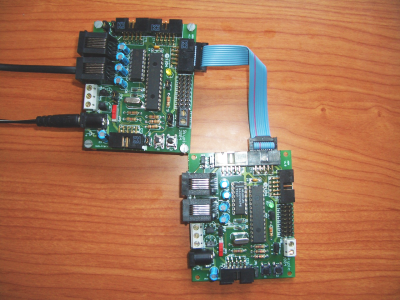
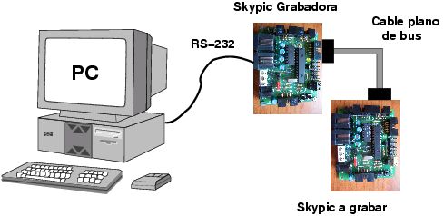
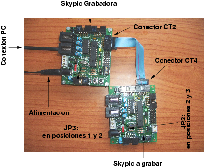
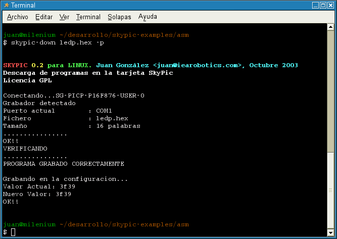

|
Cuaderno técnico 7: Grabación de la tarjeta Skypic usando otra Skypic |
|
 |
La tarjeta Skypic tiene un PIC16F876A que se puede grabar in-circuit de diferentes maneras:
Mediante un cable paralelo, usando en Linux el PiKdev y en Windows el ICPROG
Utilizando la tarjeta CT6811
Mediante el ICD2 de Microchip
Utilizando otra Skypic
En este cuaderno técnico describiremos el último método.
Cuando se diseñó la Skypic no conocíamos todavía ningún método sencillo para grabarla desde plataformas Linux. Como lo que habíamos usado hasta entonces era el microcontrolador 6811, desarrollamos un sencillo grabador utilizando la tarjeta CT6811. Una vez que se validó su funcionamiento y que ya podríamos grabar programas en la Skypic, migramos el software del 6811 al PIC16F876A, lo que nos permitió utilizar una Skypic como grabadora de otra Skypic. De esta manera completamos la transición a los micros PIC usándolos desde entornos GNU/Linux.
La grabación se esquematiza en la figura inferior. Los elementos necesarios son:
Un PC con puerto serie
Una Tarjeta Skypic, con un PIC16F876A y un reloj de 4MHz. Debe tener grabado el servidor PICP. El ejecutable (.hex) lo puedes bajar directamente desde este enlace.
La skypic que se quiere grabar.
Un cable plano de bus de 10 vías para conectar la skypic grabadora (Puerto B, conector CT2) con la que queremos grabar (Conector CT4)
|
 |
La grabación se realiza de la siguiente manera:
Como grabadora tomar una Skypic que tenga grabado el servidor PICP. ¿Cómo grabar la Skypic grabadora? Bueno, esto es como el problema del huevo y la gallina :-). Hay que utilizar cualquiera de los otros métodos de grabación.
La configuración de los jumpers de la grabadora es la siguiente:
J1 puesto
J2 puesto
Switch JP3 en modo normal (con el capuchón rojo hacia la izquierda, en las posiciones 1 y 2)
JP4 y JP5 en las posiciones 1 y 2
JP6 en las posiciones 1 y 2
JP7 en posiciones 1 y 2
Conectar la grabadora al puerto serie del PC
Alimentarla (realmente la alimentación se puede poner en la grabadora o en la otra skypic, ya que se transmite de una a otra a través del cable de bus)
Colocar el cable de bus en el conector CT2
Configurar los jumpers de la skypic a grabar de la misma manera que la grabadora, excepto el JP3. Este Switch se situará en el extermo contrario (hacia la derecha, en las posiciones 2 y 3)
Conectar el otro extremo del cable de bus al conector CT4
En el PC deberemos tener instalado el software Skypic-down. En la página se muestra cómo instalarlo y usarlo
Puedes realizar pruebas de grabación con este fichero
|
 |
Aquí hay un pantallazo de la grabación del programa ledp.hex, que hace parpadear el led de la Skypic. Se ha utilizado la versión 0.2 del Skypic-down:
|
 |
Tarjeta Skypic
PiKdev , entorno de desarrollo para pics en Linux
ICPROG, grabación de PICs en entornos Windows
Servidor para programación de PICS: servidor PICP
Programa Skypic-down, para la grabación de PICs usando otro microcontroaldor.
Cuaderno técnico 5: Grabación de microcontroladores PIC usando la tarjeta CT6811
Cuaderno técnica 4: Grabación de microcontroladores PIC.
Manual para grabar la SKYPIC desde el puerto paralelo con el ICPROG
Cable paralelo para grabar la SKYPIC desde el puerto paralelo con el ICPROG
Este documento se distribuyen bajo licencia FDL por lo que se permite su copia, modificación y distribución, siempre y cuando se mantenga esta nota.
15/Junio/2005: Publicado enlace en esta web
{kind=link}